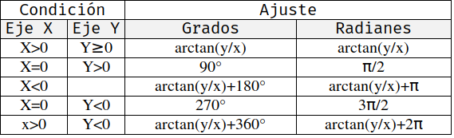
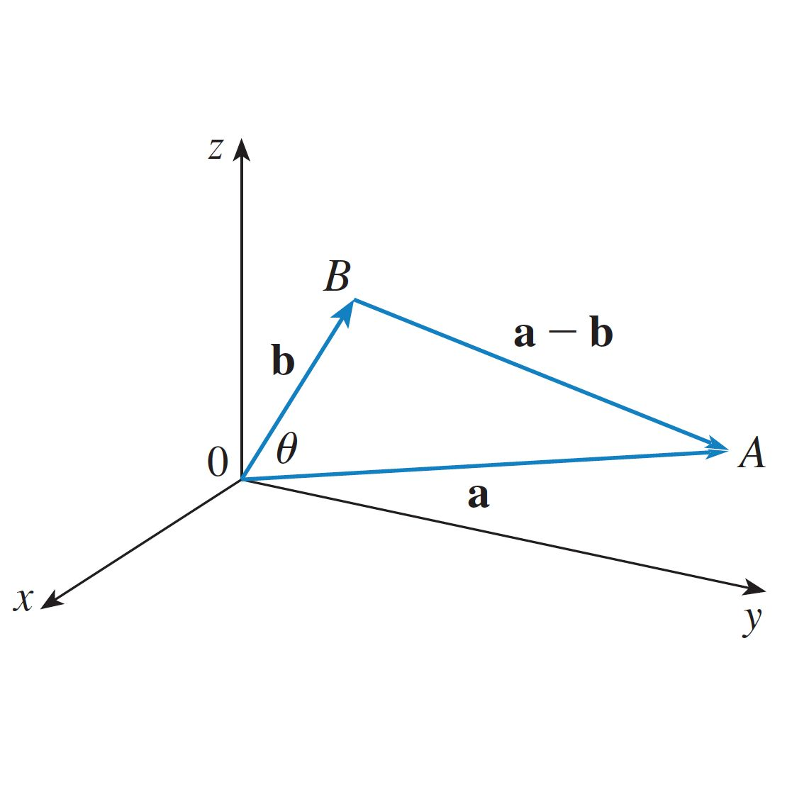
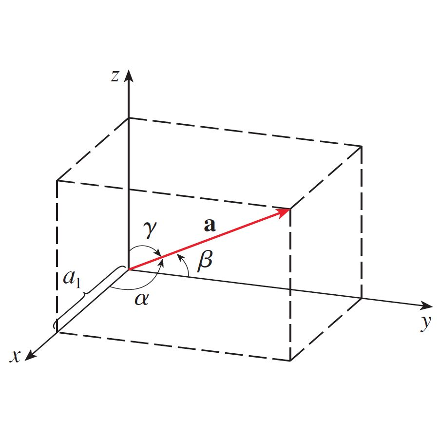
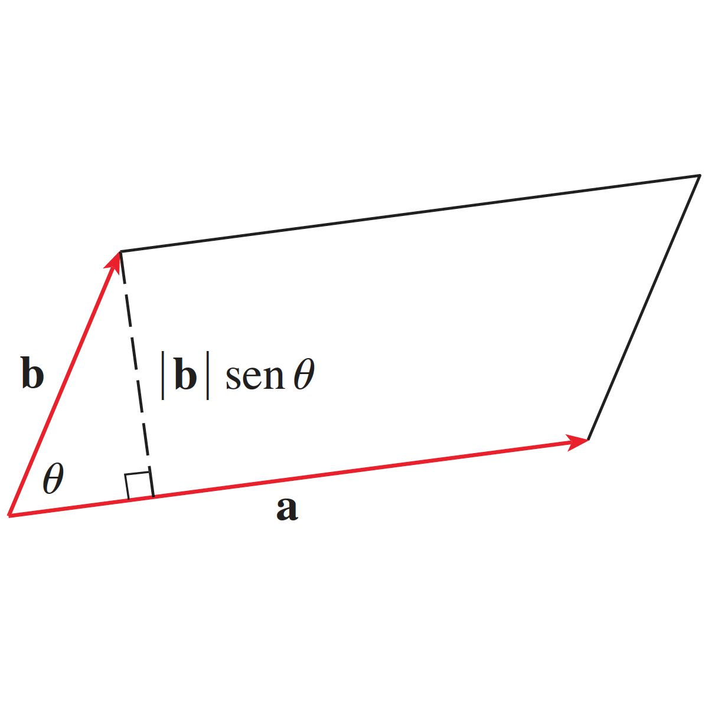
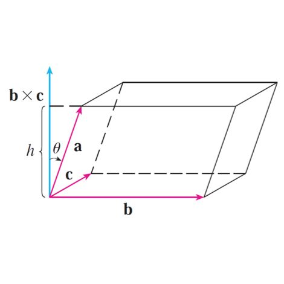

Vectores
Apuntes
Índice
1 Definiciones
1.1 Magnitud
Atributo de un fenómeno, cuerpo o sustancia que puede ser distinguido cualitativamente y determinado cuantitativamente. También se entiende como cantidad física formada por un número y la unidad de medida respectiva.
1.2 Escalares
Cantidad física que solo tiene magnitud. Son ejemplo de escalares: distancia, masa, tiempo, rapidez, temperatura, área, volumen, densidad, trabajo, energía, potencia y frecuencia. Los escalares pueden ser manipulados por las reglas del álgebra ordinaria. Ejemplos de estas serían:
4 m, 5 kg, 60 s, 20 m/s, 37 °C…
1.3 Vectores
Cantidad física que tiene magnitud, dirección y sentido. Son ejemplo de vectores: la velocidad, la aceleración, la fuerza, el peso, la cantidad de movimiento, el desplazamiento, campo eléctrico y el campo magnético.(la palabra vector significa portador en latín). Ejemplos:
-4 m/s, +9.8 m/s2, 500 N 30°…
2 Notacion
2.1 Representación
Para representar un vector usamos la notación \(\vec{A}\) o también podemos usar negritas A.
2.2 Magnitud
Es como se le llama a la longitud del vector, para representar la magnitud del vector usamos dos líneas paralelas \(|\vec{A}|\), posee unidades y siempre es positiva. Cuando dos vectores tienen la misma magnitud y la misma longitud se dice que son iguales independientemente si el punto de origen es otro.
\[ V_{r} = \sqrt{x^2+y^2+z^2} \]
3 Sistemas de coordenadas
3.1 Rectangulares
Es el sistema de coordenadas con el que estamos más familiarizados, donde un punto en el espacio se representa con un número en su respectivo eje, por ejemplo \( (1,43,5) \) corresponde a un punto ubicado en X:1, Y:43 y Z:5. Esta representación es muy fácil de operar debido a que sus componentes se pueden manipular individualmente.
3.2 Polares
La representación que más se asemeja a la definición matemática de vector, ya que cuenta con un valor escalar que representa su magnitud o longitud y con un ángulo que representa su inclinación, ejemplo \( (10, 160°) \) corresponde a una línea de radio 10 a 160° grados respecto al origen. Una característica muy importante de esta representación es que NO se pueden sumar directamente, requiere algún tipo de manipulación algebraica.
4 Vectores notables
4.1 Vector unitario
Es un vector cuya magnitud es igual a uno, pero con la misma dirección que un vector dado, se denota frecuentemente con un acento circunflejo \(\hat{r}\). Para determinar el vector tenemos que dividir nuestro vector entre el valor de su módulo1 (o magnitud). Ejemplo:
\[ A = (32, 43, 32) \] \[|A| = 62.43 \] \[(\frac{32}{62.43}, \frac{43}{62.43}, \frac{32}{62.43})\]
\[ \boxed{ \hat{A} = ( 0.51, 0.68, 0.51) } \]
4.2 Vectores deslizantes
Son aquellos vectores que pueden moverse sobre su línea de acción sin cambiar su magnitud y dirección.
4.3 Negativo de un vector
Se define el negativo de un vector como aquel que sumado con el vector original, da como resultante cero. El negativo de un vector posee la misma magnitud que el vector original, pero apunta en dirección opuesta (+180°).
\[ A = (10, 50°) \] \[ -A = (10, 180°) \]
5 Convercion de sistemas de cordenadas
5.1 Polares a rectangulares
No hay mucho misterio para la conversión de polares a rectangulares, simplemente sustituimos nuestros valores en las fórmulas 2.
\[ \begin{aligned} V_{x} &= r \sin{(\theta)} & V_{y} &= r \cos{(\theta)} \\ \end{aligned} \]
5.2 Rectangulares a Polares
Primero para obtener el radio de nuestra coordenada:
\[ V_{r} = \sqrt{x^2+y^2+z^2} \]
La segunda parte es más complicada, ya que debemos encontrar el ángulo que forma el eje x y nuestro radio la función para determinarla es la siguiente:
\[ tan^{-1}\left(\frac{y}{x}\right) \]
Pero esta función solo funciona para números mayores a 0 en el primer cuadrante del plano, sin embargo podemos manipular la ecuación para ajustarla a nuestro cuadrante adecuado. Otra cosa importante es que la función es discontinua eso significa que sí \(x = 0\) no podemos realizar la evolución de la función, sin embargo en estos casos podemos utilizar la lógica para encontrar el ángulo 2.

Sí X=0 y Y>0 eso nos indica que el radio se encuentra exactamente sobre el eje Y apuntando hacia arriba (90°); Sí X=0 y Y<0 eso significa que el radio se encuentra exactamente sobre el eje Y pero apuntando hacia abajo (270°).
6 Producto punto
También conocido como producto escalar o producto interno, es una operación que convierte dos vectores de igual dimensión y retorna un solo número:

\[ \begin{aligned} \boldsymbol{a} \cdot \boldsymbol{b} &= a_1 b_1 + a_2 b_2 + a_3 b_3 \\ \boldsymbol{a} \cdot \boldsymbol{b} &= \big|a\big| \big|b\big| \cos (\theta) \end{aligned} \]
6.1 Propiedades
\[ \begin{aligned} a \cdot b &= |a|^2 \\ a \cdot b &= b \cdot a \\ a \cdot (b \cdot c) &= a \cdot b + a \cdot c \\ (\mathbf{c}a) \cdot b &= \mathbf{c}(a \cdot b) = a \cdot (\mathbf{c}b) \\ 0 \cdot a &= 0 \end{aligned} \]
6.2 Aplicaciones
Una de las propiedades del producto punto es ayudarnos a calcular los ángulos directores; Los cosenos directores son aquellos ángulos que forma el vector con los ejes coordenados. Partiendo de que \( \boldsymbol{a} \cdot \boldsymbol{b} = \big|a\big| \big|b\big| \cos (\theta) \) eso significa que podemos despejar el ángulo entre dos vectores:
\[ cos(\alpha) = \frac{a \cdot i}{|a| |i|} \]
Sí sustituimos \(i\) con un vector unitario sobre uno de los ejes coordenados podemos determinar los ángulos con respecto a cada uno de los ejes:

\[ \begin{aligned} cos(\alpha) &= \frac{a_x}{|a|} & cos(\beta) &= \frac{a_y}{|a|} \end{aligned} \]
\[ cos(\gamma) = \frac{a_z}{|a|} \]
7 Producto cruz
Producto vectorial o producto vectorial de Gibbs, Es una operación entre dos vectores y da como resultado un vector perpendicular a los vectores que se multiplican:
\[ \boldsymbol{a} \times \boldsymbol{b} = \Bigg\{ \begin{aligned} a_{2}b_{3}-a_{3}b_{2} \\ a_{3}b_{1}-a_{1}b_{3} \\ a_{1}b_{2}-a_{2}b_{1} \end{aligned} \]
7.1 Aplicaciones
Área de un paralelogramo: La extensión del producto cruz es igual al área del paralelogramo determinado por a y b.

\[ \vert a \vert(\vert b \vert sen(\theta)) = \vert a \times b \vert \]
Volumen de un paralelepípedo: Se puede determinar el volumen de un paralelepípedo calculando la magnitud de su triple producto escalar:

\[ V = \vert a \cdot ( b \times c ) \vert \]
8 Suma de vectores
La forma más sencilla de sumar vectores es sin duda aprovecharnos de las propiedades del sistema de coordenadas rectangulares, hay que recordar que las coordenadas polares NO se pueden sumar directamente pero las rectangulares si.
Pasamos nuestros vectores de polares a rectangulares y sumamos sus cordenadas polares:
| Polar | Eje x | Eje y |
|---|---|---|
| (100, 50°) | 64.28 | 76.60 |
| (70, 0°) | 70 | 0 |
| (50, 120°) | -25.00 | 43.30 |
| (35, 200°) | -32.89 | -11.97 |
| Suma total | 76.38 | 107.93 |
El vector resultante seria \[ (76.28, 107.93) \]
por último podemos cambiar su representación nuevamente a polar, sí el ejercicio lo requiere.
8.1 Resta de vectores
La resta de vectores es simplemente la suma de un vector más otro vector opuesto \(A+(-B)\).